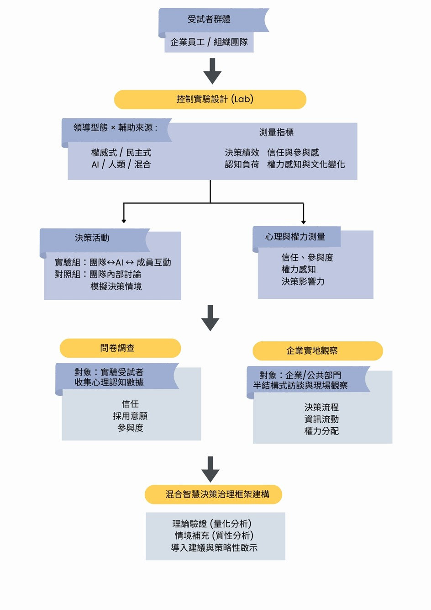

系學會

生成式人工智慧（Generative AI, LLM）已廣泛應用於知識檢索、會議摘要與決策建議，但對於組織決策文化、權力分配與人機協作的影響仍缺乏實證研究。本研究聚焦於語言生成型生成式 AI，採用混合方法設計(Mixed Methods Approach)，結合控制實驗、問卷調查與企業實地觀察，操作領導型態（權威式 / 民主式）與 AI 介入模式（AI 輔助、人主導–AI 建議、AI 主導），形成 2 × 3 的受試者間設計。研究將進一步設計不同決策支援語言 (DSL)，以觀察語氣、提示結構與互動方式對認知負荷、決策績效及參與感的影響。研究將提出 「混合智慧決策治理框架」，說明生成式 AI 如何重塑組織決策流程、權力結構及人機協作模式，並提供實務治理建議。
生成式人工智慧（LLM）的快速發展正在改變組織決策過程與人機協作模式，不僅帶來技術應用挑戰，也重塑資訊流動、決策參與和權力分配（Wen, Wang, & Chen, 2025; Mahroof, 2025）。研究顯示，信任是人機協作的核心，而 AI 的自主性與角色設計會影響人員的決策參與和權力感知。雖然 LLM 能強化決策支援系統（DSS）的語意分析與知識萃取能力，其幻覺（hallucination）、可解釋性不足與來源不明等問題仍可能削弱決策信任與採用意願。
此外，組織心理學與工商心理學研究指出，決策文化、領導型態與權力動態會影響個體在決策過程中的參與感、信心與協作效率（French & Raven, 1959; Yukl, 2013）。在 AI 介入決策的情境下，這些心理與組織因素可能與人機互動模式交互作用，對決策績效與組織智慧產生顯著影響。基於上述，本研究提出以下研究問題：
透過控制實驗、問卷調查與企業實地觀察的多方法策略，本研究將提供語言生成型生成式 AI 導入組織的理論依據與實務治理建議。
生成式人工智慧（Generative AI, GenAI）是一種透過深度學習模型自動生成文本、圖像或其他內容的 AI 技術，其核心特徵在於能根據大量數據學習模式，並自主生成高質量建議或決策方案。本研究聚焦於語言生成型生成式 AI（Language Generation AI），用於決策支援系統（Decision Support Systems, DSS）中，用以提供建議、提示與互動指令。 研究顯示，信任是人機協作的核心要素，員工對 AI 的信任程度直接影響其在決策過程中賦予 AI 的權重（Wen, Wang, & Chen, 2025）。當 AI 具備較高自主性或生成能力時，若缺乏透明度或可解釋性，可能降低人員的協作意願與決策權重分配（Cabrera, Perer, & Hong, 2023）。反之，透過行為描述糾正 AI 錯誤，或在 AI 表現良好時依賴其建議，可以提升人機團隊的績效。此外，改善使用者的心智模型（Mental Model）能顯著提高使用 AI 輔助工具時的決策品質與信心。這些研究強調，設計有效的人機互動界面與協作流程時，需同時考慮信任建立、心智模型培養以及 AI 自主性知覺。
生成式 AI 驅動的決策支援系統（GenAI-DSS）在不同行業應用中，既提升了決策效率，也改變了組織內部的權力結構與資訊流動方式（Mahroof et al., 2025; Kovari, 2024）。研究指出，系統準確性、透明度與可解釋性是使用者信任及採用的關鍵因素。透明且可理解的生成式 AI 建議，能降低決策者的不確定性，增進信任與接受度（Jain et al., 2023）。 組織心理學與工商心理學研究指出，領導型態、權力感知與決策參與度是影響人機協作績效的重要因素。民主式領導下，員工對 AI 的建議更易賦予影響力，提升參與感；權威式領導則可能強化效率但抑制參與感（Mahroof et al., 2025）。此外，AI 系統在高風險或不確定性任務中，通常被使用者視為建議者；在結構化任務中，則可擔任協作者或決策者。組織內部權力平衡、資訊透明度與互動模式共同塑造了人機協作的效果與組織智慧表現（Wen et al., 2025; Jain et al., 2023）。
近期研究提出了將人類與生成式 AI 協作治理化的框架，以支持組織在導入 GenAI 時的策略性決策與權力分配。Sauer & Burggräf (2024) 在生產管理領域提出系統化框架，透過數據可用性、過程變異性、錯誤易感性與決策複雜性，協助管理者決定人類與 AI 的協作水平。 基於上述文獻，本研究提出 「混合智慧決策治理框架 (Hybrid Intelligence Governance Framework)」，整合功能性信任、AI 角色定位、透明度、資訊流動與使用者心智模型等關鍵因素。該框架旨在說明語言生成型生成式 AI 如何在不同領導型態下改變組織內部的決策文化與權力動態，並提供企業導入 AI 的策略性治理建議。透過此框架，可為不同任務屬性下的人機協作最佳化提供理論指引及實務建議，並為後續實證研究提供明確操作依據。
本研究採用混合方法設計 (Mixed Methods Approach)，結合控制實驗、問卷調查與企業實地研究，全面探討生成式 AI 在不同領導型態與決策輔助來源下對組織決策文化、權力分配及人機協作的影響。控制實驗操作的主要變項為領導型態（權威式 / 民主式）與決策輔助來源（AI / 人類 / 人機混合）。在 AI 或人機混合輔助條件下，本研究進一步設計不同決策支援語言 (Decision Support Language, DSL)，以控制 AI 建議的語氣、提示結構及互動方式，觀察其對認知負荷、決策績效及參與感的影響。
在理論基礎上，本研究首先依據認知負荷理論（Cognitive Load Theory, CLT）來提出研究假設。CLT強調，個體在處理資訊時，認知資源有限，當外在負荷過高時，決策效率與正確性將會受到影響。因此，不同領導型態與 AI 介入模式可能對決策者的認知負荷產生顯著差異。例如，在權威式領導下，人主導的決策過程可能使決策者承受較高的外在壓力，而在民主式領導下，結構化或視覺化呈現的 AI 建議預期能有效降低外在負荷，使決策者能專注於核心判斷任務，提升決策效率與正確性。透過 CLT 的視角，本研究能解釋不同人機互動設計如何影響決策者的認知資源配置與任務表現。
其次，本研究結合科技接受模型（Technology Acceptance Model, TAM）與整合性科技接受理論（Unified Theory of Acceptance and Use of Technology, UTAUT），探討使用者對 AI 系統的態度與採用意願。TAM 著重於使用者對系統的感知易用性（Perceived Ease of Use, PEOU）與感知有用性（Perceived Usefulness, PU），這兩個因素會影響使用者對系統的接受程度。UTAUT 則進一步考量績效期望、努力期望、社會影響及促進條件對行為採用的影響，並能捕捉不同組織情境下的中介機制。透過這些理論，本研究可以檢視使用者在不同 AI 介入模式與決策支援語言下，如何因感知系統易用性與效用而調整其決策行為與信任程度。
此外，本研究還引入組織心理學中關於權力感知與參與度的理論，作為理解領導型態與 AI 介入模式對決策者心理影響的重要框架。權力感知理論指出，個體對自身在決策過程中所能影響結果的程度有明確認知，進而影響其參與意願與決策信心；參與度理論則強調，決策者的參與程度會影響組織智慧表現與決策品質。透過這些理論，本研究能說明在不同領導風格下，AI 的介入方式如何改變決策者的權力感、參與感以及對決策結果的信心，並進一步影響整個組織的人機協作效能。
基於上述理論，本研究提出以下假設：
• H1：不同領導型態與決策輔助來源對決策績效（正確率、效率、信心）具有顯著影響。
• H2：AI 輔助模式預期降低認知負荷，而人主導模式在權威式領導下可能提升效率但降低參與感。
• H3：使用者對不同輔助來源的感知易用性與感知有用性不同，進而影響採用意願。
• H4：民主式領導結合 AI 或人機混合輔助可提升決策者的權力感與參與感，形成更高的組織智慧表現。
在企業中具有決策任務經驗的研究生或企業員工分別參與由領導型態與決策輔助來源組成的六種情境，模擬企業資源配置與風險判斷的情境，並且使用決策績效：正確率、決策速度、信心，認知負荷：Paas 等量表，使用者信任與參與感：TAM/UTAUT 量表三者作為測量指標。最後利用ANOVA / MANOVA 分析方法比較不同實驗條件的差異
邀請企業員工及控制實驗受試者，利用TAM/UTAUT 理論構面，納入權力感知與參與度指標的設計化量表做問卷調查。結果利用結構方程模型 (SEM) 驗證領導型態與輔助來源對決策績效的間接影響及中介機制進行分析。
在企業或公共部門導入生成式 AI 輔助決策工具利用半結構式訪談與現場觀察，記錄輔助來源對決策流程、資訊流動、參與度及權力分配的實際影響做資料蒐集。結果使用 NVivo 進行質性主題編碼與情境分析，補充實驗結果的外部效度做分析。
透過量化與質性資料的交叉分析，本研究將建構混合智慧決策治理框架 (Hybrid Intelligence Governance Framework)，說明生成式 AI 如何在不同領導型態下重塑組織決策文化、權力結構及人機協作模式，並提供企業策略性導入建議。在資料分析層面，實驗數據將使用 ANOVA 或 MANOVA 比較不同實驗條件下的決策績效差異，SEM 將用於檢驗認知負荷、感知易用性、感知有用性對決策績效的中介作用，而質性資料則透過主題分析補充對企業真實決策情境的理解。整合量化與質性分析結果後，本研究不僅能驗證理論假設，還能提供 實務上可操作的策略建議，包括在不同領導型態下如何設計 AI 輔助系統，以提升決策品質、信任感與組織智慧表現。 綜合以上，本研究方法的設計具有嚴謹的理論基礎，透過操作領導型態與 AI 介入模式的實驗設計、問卷測量與實地觀察的混合方法，能完整呈現生成式 AI 對組織決策的多面向影響，並為未來企業導入 AI 系統提供策略性指引。
本研究預期提出初步的 「混合智慧決策治理框架（Hybrid Intelligence Governance Framework）」，以語言生成型生成式 AI 為核心，整合人機協作、決策文化與權力分配因素，提供理論與實務的雙重指引。
在理論層面，研究將：系統性檢驗 AI 輔助模式與領導型態（權威式 / 民主式）對決策者 認知負荷、權力感、參與感與信任 的影響，並分析其對組織智慧表現的中介與交互效應。建構以人機協作為核心的 組織智慧分析框架，整合信任建立、角色定位、資訊流動與提示語言設計（DSL）等關鍵因素，驗證生成式 AI 在不同任務屬性（策略性、程序性、倫理性決策）下的效能與適用性。
在實務層面，研究將：提供企業導入生成式 AI 的策略與治理建議，包括如何設計 提示語氣與互動結構、確保決策透明度、信任度與協作效率。指導企業在策略性、程序性及倫理決策中靈活運用 AI，優化組織內人機分工與權力分配，提升決策質量與組織智慧。
總體而言，本研究不僅將提供對生成式 AI 導入組織的 理論性驗證，也將形成可操作的 策略性框架，協助企業在不同領導型態與任務情境下有效管理人機協作與組織決策流程。
1. Wen, Y., Wang, J., & Chen, X. (2025). Trust and AI weight: human-AI collaboration in organizational management decision-making. Frontiers in Organizational Psychology, 3, 1419403.
2. Mahroof, K., Weerakkody, V., Hussain, Z., & Sivarajah, U. (2025). Navigating power dynamics in the public sector through AI-driven algorithmic decision-making. Government Information Quarterly, 42(3), 102053.
3. Kovari, A. (2024). AI for decision support: Balancing accuracy, transparency, and trust across sectors. Information, 15(11), 725.
4. Cabrera, Á. A., Perer, A., & Hong, J. I. (2023). Improving human-AI collaboration with descriptions of AI behavior. Proceedings of the ACM on Human-Computer Interaction, 7(CSCW1), 1-21.
5. Jain, R., Garg, N., & Khera, S. N. (2023). Effective human–AI work design for collaborative decision-making. Kybernetes, 52(11), 5017-5040.
6. Lim, J. S., Hong, N., & Schneider, E. (2025). How warm-versus competent-toned AI apologies affect trust and forgiveness through emotions and perceived sincerity. Computers in Human Behavior, 172, 108761.
7. Heller, S., Ullrich, J., & Mast, M. S. (2023). Power at work: Linking objective power to psychological power. Journal of Applied Social Psychology, 53(1), 5-20.
8. Kanfer, R., & Chen, G. (2016). Motivation in organizational behavior: History, advances and prospects. Organizational behavior and human decision processes, 136, 6-19.
9. Kwon, S. H., & Kim, J. S. (2025). Relationship between participative decision-making within an organization and employees’ cognitive flexibility, creativity, and voice behavior. Behavioral Sciences, 15(1), 51.
10. Chen, H., Park, H. W., & Breazeal, C. (2020). Teaching and learning with children: Impact of reciprocal peer learning with a social robot on children’s learning and emotive engagement. Computers & Education, 150, 103836.
系學會

AIESEC

社團活動-撞球社&烏克麗麗社
很很感謝您願意花費寶貴時間瀏覽我的網站，旨在讓您更全面地了解我的背景、專業技能與經歷。作為大學新鮮人，雖然經驗尚淺，但我對未來充滿熱情與學習的動力，誠摯期待有機會與您面對面交流。